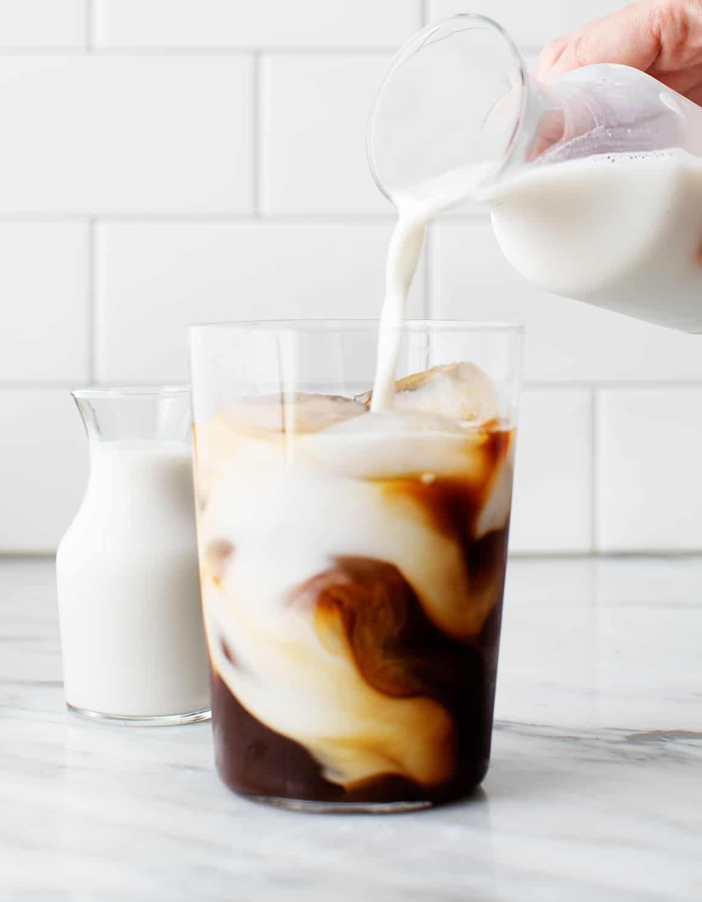

Cold Brew Coffee

Description:
Don't confuse cold-brew coffee with iced coffee. Although both are coffee, cold brew's slower, room-temperature brewing method helps the coffee develop a less bitter taste. This wonderful recipe makes it worth the time it takes to brew!
This recipe is taken from Love and Lemons's blog. Give her a visit, her recipes are so good!!!
Ingredients:
1.5 cups fresh coarsely ground coffee
3 cups filtered water
Milk, can be regular or plant milk
Steps:
- Place the ground coffee in a 28 oz jar. Add water and stir. Cover and set adie for 12-24 hours at room temperature.
- Spread a piece of cheesecloth in a fine mesh strainer over a large bowl. Pour the coffee into the bowl to strain out the ground coffee. Store the strained coffee in the fridge.
- When ready to serve, pour over ice and add milk as desired.
- If the coffee is stronger than you'd like ,dilute it with water or milk.